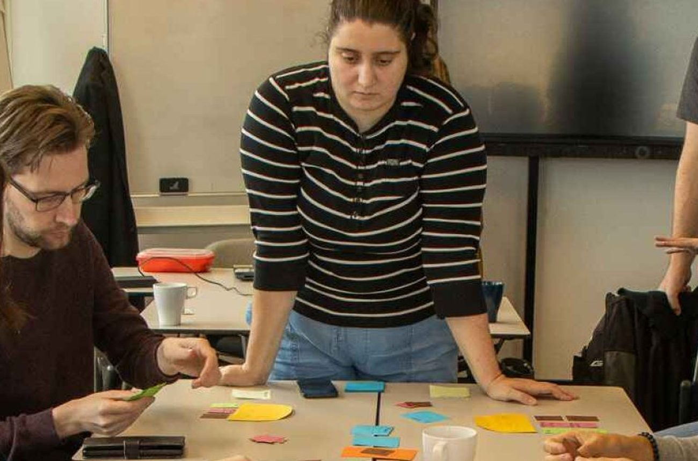

Comment faire du jeu vidéo ou de l’animation 3D sans se ruiner ?
Six voies pour étudier le jeu vidéo ou l’animation 3D sans payer plein tarif pendant cinq ans.
Écoles publiques, universités, apprentissage, bourses. Nous comparons ce qui coûte vraiment moins cher et ce que ça change pour l’emploi.

Six voies pour étudier le jeu vidéo ou l’animation 3D sans payer plein tarif pendant cinq ans.



Six voies pour étudier le jeu vidéo ou l’animation 3D sans payer plein tarif pendant cinq ans.
Neuf écoles comparées sur les mêmes critères, diplômes vérifiés au RNCP et à la CTI, 14 classements et palmarès recoupés.
Huit écoles d’animation 3D et d’effets visuels comparées, 12 palmarès et classements recoupés, diplômes vérifiés au RNCP.
Six écoles de son comparées, du concours public au cursus privé en alternance.
Vous avez 17 ans, un carnet de croquis bien rempli et l’envie de travailler sur des films d’animation.

Ubisoft, Quantic Dream, Don’t Nod, Ankama.
Note globale sur 10 pondérée par le coût réel, alternance et frais d’inscription compris.
Voir la méthode de notation


Comparez deux écoles sur nos cinq critères en un clic.
Oui, l’ENJMIN, école du Cnam à Angoulême, est la principale école publique du jeu vidéo en France. Elle recrute au niveau master, après un bac+3.
Oui, la plupart des écoles reconnues passent en alternance en fin de cursus. Chez ISART Digital, les 4e et 5e années du jeu vidéo et de l’animation se font en rythme alterné, et dès la 2e année en sound design.
Pendant les années en alternance, c’est l’entreprise et son opérateur de compétences qui financent la formation, et l’étudiant est rémunéré. Les premières années restent à la charge de la famille.
Seulement dans les établissements privés habilités à recevoir des boursiers. ISART Digital est un établissement d’enseignement supérieur privé reconnu par l’État, il faut vérifier chaque année la liste des formations éligibles.
C’est possible avec un portfolio très solide, surtout en programmation. Les studios recrutent toutefois majoritairement des profils diplômés, et les grands studios filtrent souvent les candidatures sur le niveau bac+5.
Un email par semaine, avec le classement du mois, les dates des journées portes ouvertes et les nouveaux comparatifs d’écoles.
Désinscription en un clic.